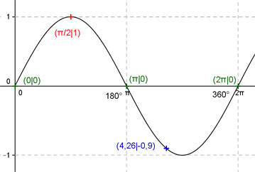

Aufgabe 130 Ergänzen Sie die Wertetabelle für x zwischen 0 und 2π. y = sin x x 4,26 π/2 y -0,9 1 Amplitude = 1; Periode = 2π Berechnung der Nullstellen: sin x = 0 --> Wegen x = k * π und k = 0, 1, 2 --> x1 = 0 oder x2 = π oder x3 = 2π N1 liegt bei 0 oder 0°, N2 bei π oder 180°, N3 liegt bei 2π oder 360°.  Funktionswert an einer Stelle x ermitteln: x = 4,26 f(4,26) = sin 4,26 = sin 244° = - 0,9 gerundet. Berechnung der x-Werte für y = f(x) = 1: f(x) = 1 eingesetzt, existiert einmal zwischen 0 und π bzw. 0° und 180° (siehe Graph). sin x = 1 --> x = arc sin 1 = π/2 oder α = 90°